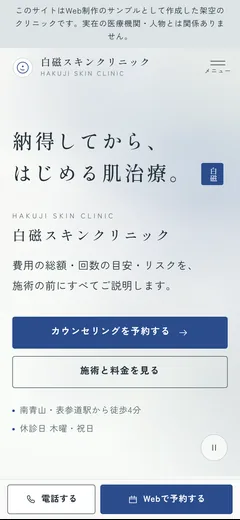
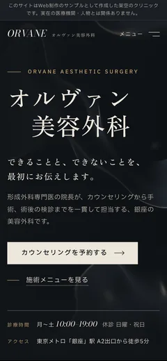
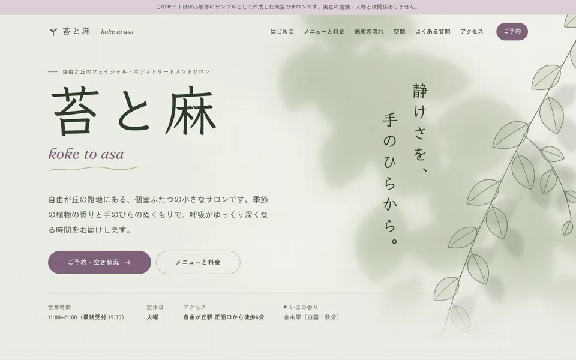
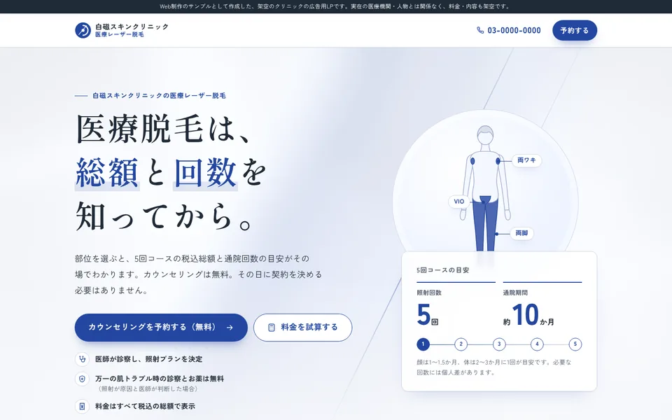

広告表現への配慮
医療広告に関する厚生労働省のガイドラインや景品表示法を踏まえ、体験談・値引きの強調・誇大な表現を使わずに構成しています。自由診療の費用・リスク・副作用は、価格のすぐ隣に本文と同じ大きさで表示します。
Sample works
美容皮膚科・美容外科・エステサロン・医療脱毛LPの、4つのサンプルサイトです。すべて架空のブランドで制作し、実際の制作で求められる広告表現への配慮、予約までの導線、表示速度、公開後の更新しやすさまで形にしています。


施術の前に「費用の総額・回数の目安・リスク」を説明しきることを軸にした美容皮膚科。施術データを一元管理し、一覧・詳細・料金表・LPに同じ情報を表示します。

墨色と象牙色のエディトリアルデザインで、カウンセリングを重視する姿勢を伝える美容外科。症例写真の隣に治療内容・費用・リスクを並べる掲載テンプレートを備えます。


植物の影と麻の質感で静かな時間を表現したトリートメントサロン。医療的な効能をうたわない言葉選びと、コース契約のクーリング・オフ案内まで含めています。

値引きや体験談に頼らず、税込の総額と通院回数を先に示して予約につなげるLP。人体図と連動したシミュレーターと、入力しやすいフォームが中心です。
医療広告に関する厚生労働省のガイドラインや景品表示法を踏まえ、体験談・値引きの強調・誇大な表現を使わずに構成しています。自由診療の費用・リスク・副作用は、価格のすぐ隣に本文と同じ大きさで表示します。
料金はすべて税込の総額で表示しています。医療脱毛LPでは、部位を選ぶだけで総額と通院回数の目安がわかるシミュレーターを用意しました。月額だけを強調する表示はしていません。
予約フォームは入力・確認・完了の3段階で、入力の誤りはその場でお知らせします。スマートフォンでは画面下に予約ボタンを固定し、電話とWeb予約の入口を各ページに置いています。
料金や施術内容はデータとして1か所で管理し、変更すると一覧・詳細・料金表・LPのすべてに反映されます。WordPressで院内から更新できる版のテーマも用意しています。
サンプルの表現は、一般的な規制の考え方を踏まえて作成したものです。実際の掲載前には、医療機関・事業者の皆さまと内容を確認し、必要に応じて専門家の確認を受ける前提で進めます。
| サンプル | PHP | JavaScript | 演出 | 構造化データ |
|---|---|---|---|---|
| 白磁スキンクリニック | 共通パーツのinclude、データ駆動の施術詳細、3段階の予約フォーム | 悩み別の絞り込み（並べ替えアニメーション）、受付状況のリアルタイム表示、ARIAタブ | Canvasの背景演出、ページ遷移アニメーション（View Transitions） | MedicalClinic、MedicalWebPage（監修者・最終確認日）、BreadcrumbList |
| オルヴァン美容外科 | データ駆動の施術詳細、カウンセリング予約フォーム | GSAP（SplitText・ScrollTrigger）、matchMedia による出し分け | 見出しの文字分割アニメーション、横スクロールで進む施術の流れ（PCのみ） | MedicalClinic、MedicalWebPage（監修者・最終確認日）、BreadcrumbList |
| 苔と麻 | 共通パーツのinclude、メニュー・料金のデータ管理 | GSAP（ScrollTrigger・DrawSVG）、Swiper、アクセシブルなダイアログ | スクロールに連動する植物の線画、CSSスクロール駆動アニメーション | BeautySalon、BreadcrumbList |
| 白磁 医療脱毛LP | JSON API（Origin検査・CSRF・送信間隔制限）、コーポレートサイトとの料金データ共有 | 人体図と一覧が連動するシミュレーター、fetch による非同期送信、dataLayer 計測 | 合計金額の数値アニメーション、固定CTAの出し入れ | MedicalWebPage（監修者・最終確認日）、MedicalClinic |
| ページ | パフォーマンス | アクセシビリティ | ベストプラクティス | SEO | LCP | CLS |
|---|---|---|---|---|---|---|
| 白磁スキンクリニックindex.html | 92 90〜98 | 100 | 100 | 100 | 1.1 s | 0.025 |
| 白磁スキンクリニックtreatment-ipl.html | 99 98〜100 | 100 | 100 | 100 | 1.0 s | 0.023 |
| オルヴァン美容外科index.html | 98 94〜99 | 100 | 100 | 100 | 1.6 s | 0.007 |
| オルヴァン美容外科treatment-double-eyelid-suture.html | 98 90〜99 | 100 | 100 | 100 | 1.6 s | 0 |
| 苔と麻index.html | 86 81〜93 | 100 | 100 | 100 | 1.8 s | 0.005 |
| 苔と麻menu.html | 96 88〜98 | 100 | 100 | 100 | 1.4 s | 0.013 |
| 白磁 医療脱毛LPindex.html | 91 91〜91 | 100 | 100 | 100 | 2.7 s | 0.002 |
Lighthouse は本番公開を想定したビルド（検索エンジン向けの noindex を外した版）で計測しています。公開中のサンプルは架空サイトのため noindex を付けており、PageSpeed Insights で測ると SEO の値は下がります。